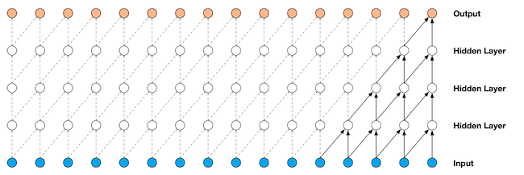
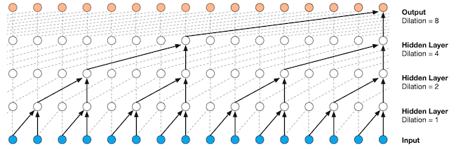
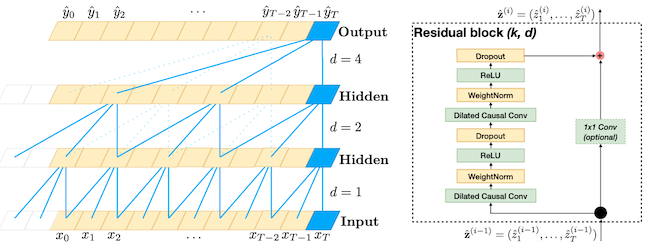
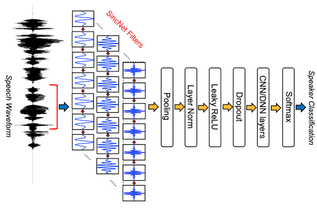

Front-ends#
Conv-1D#
Dieleman et al. [DS14] were probably the first to attempt replacing the spectrogram input by a learnable front-end, here 1D-convolution. They replicated the spectrogram parameters (window length, hop size) in the 1D-convolution parameters (kernel-length and stride). A major difference between the spectrogram (magnitude of the STFT) and learnable 1D-kernels, is the phase-shift invariance provided by the former (to perform this with the later will necessitates a kernel for all possible phase-shift of a given frequency). To facilitate the learning of such kernels, smaller kernel (hence with less possibilities for phase-shifts) has been proposed, such as in Sample-CNN (a cascade, as in VGG-net, or small 1D filters) [LPKN17].
1D-Convolution is very popular for source separation front-ends: as in ConvTasNet
As in Wav-U-Net [SED18], ConvTasNet [LM19] or Demucs [DefossezUBB19].

image source: WaveNet [vdODZ+16]
Dilated-Conv-1D#
The 1D-dilated convolution was proposed in the paper WaveNet was proposed in [vdODZ+16]. The goal of it is to increase the side of the receptive field. Indeed, since audio signals has a large dimensionality (16.000 values for 1 second of audio at a sampling rate of 16Khz), one would need a very large kernel, or a very large number of layers in order the receptive field to capture the whole signal. Dilated convolution consists in skipping 1 sample over 2 (over 4, over 8, …) when computing convolution (or equivalently adding holes in the kernel).
For a 1D-filter \(w\) of size \(l\) and a sequence \(x(n)\),
the usual convolution is written \((x \circledast w)(n) = \sum_{i=0}^{l-1} w(i) x(n-i)\); t
he dilated convolution with a dilatation factor \(d\) is written \((x \circledast_d w)(n) = \sum_{i=0}^{l-1} w(i) x(n - (d \cdot i))\),
the filter is convolved with the signal only considering one over \(d\) values.

image source: WaveNet [vdODZ+16]
torch.nn.Conv1d(in_channels, out_channels, kernel_size, stride=1, padding=0, dilation=1, groups=1, bias=True, padding_mode='zeros')
Temporal Convolution Network (TCN)#
Temporal Convolution Network was proposed in [BKK18]. It is a simplification of the computational block underlying WaveNet. It is made of
Two blocks of
Dilated causal convolution
Weight normalization
ReLU
Dropout
A residual/skip connnection

# TCN code: https://github.com/locuslab/TCN
class Chomp1d(nn.Module):
def __init__(self, chomp_size):
super(Chomp1d, self).__init__()
self.chomp_size = chomp_size
def forward(self, x):
return x[:, :, :-self.chomp_size].contiguous()
class TemporalBlock(nn.Module):
def __init__(self, n_inputs, n_outputs, kernel_size, stride, dilation, padding, dropout=0.2):
super(TemporalBlock, self).__init__()
self.conv1 = weight_norm(nn.Conv1d(n_inputs, n_outputs, kernel_size,
stride=stride, padding=padding, dilation=dilation))
self.chomp1 = Chomp1d(padding)
self.relu1 = nn.ReLU()
self.dropout1 = nn.Dropout(dropout)
self.conv2 = weight_norm(nn.Conv1d(n_outputs, n_outputs, kernel_size,
stride=stride, padding=padding, dilation=dilation))
self.chomp2 = Chomp1d(padding)
self.relu2 = nn.ReLU()
self.dropout2 = nn.Dropout(dropout)
self.net = nn.Sequential(self.conv1, self.chomp1, self.relu1, self.dropout1,
self.conv2, self.chomp2, self.relu2, self.dropout2)
self.downsample = nn.Conv1d(n_inputs, n_outputs, 1) if n_inputs != n_outputs else None
self.relu = nn.ReLU()
self.init_weights()
def init_weights(self):
self.conv1.weight.data.normal_(0, 0.01)
self.conv2.weight.data.normal_(0, 0.01)
if self.downsample is not None:
self.downsample.weight.data.normal_(0, 0.01)
def forward(self, x):
out = self.net(x)
res = x if self.downsample is None else self.downsample(x)
return self.relu(out + res)
class TemporalConvNet(nn.Module):
def __init__(self, num_inputs, num_channels, kernel_size=2, dropout=0.2):
super(TemporalConvNet, self).__init__()
layers = []
num_levels = len(num_channels)
for i in range(num_levels):
dilation_size = 2 ** i
in_channels = num_inputs if i == 0 else num_channels[i-1]
out_channels = num_channels[i]
layers += [TemporalBlock(in_channels, out_channels, kernel_size, stride=1, dilation=dilation_size,
padding=(kernel_size-1) * dilation_size, dropout=dropout)]
self.network = nn.Sequential(*layers)
def forward(self, x):
return self.network(x)
Parametric front-end: SincNet#
SincNet was proposed in [RB18]. It is one of the first parametric front-end. More precisely SincNet defines a 1D-kernel (to be used for 1D-convolution) as the results of a parametric function.
Parametric kernel: If we define a 1D-convolution filter of length N as \(w(n), n \in \{0,\ldots,N-1\}\). When training a normal convolution kernel, one has to learn each of the \(N\) filter values. In parametric kernel, \(w(n)\) is the results of a parametric function \(w_{\theta}(n)\) (\(\theta\) is the parameter) which is evaluated at the points \(n \in \{0,\ldots,N-1\}\) to get the values of \(w(n)\)
SincNet aims at designing kernels which frequency response is a band-pass filter \([f_1,f_2]\). Since band-pass filters can be obtained by subtracting a low-pass filters at frequency \(f_1\) from one at frequency \(f_1\), and since low-pass filters are expressed as SinC function in time (\(sinc(x)=\frac{\sin(x)}{x}\)), the kernel is expressed as \(w_{f_1,f_2}(n)=2 f_2 sinc(2 \pi f_2n) - 2 f_1 sinc(2 \pi f_1 n)\). To train a SincNet filter of length \(N\), we only need to learn two parameters (\(f_1\) and \(f_2\)) and not \(N\). Because we can compute the derivative of the Loss w.r.t. \(f_1\) and \(f_2\), we can then optimize \(f_1\) and \(f_2\) using standard gradient descent algorithm.
SincNet is the first of a series of front-ends which rely on differentiable implementation of signal processing: analytic filters [PCDV20], complex Gabor (CG-CNN) [NoePM20], or LEAF (Learnable Audio Front-End) [ZTdCQT21]. It can be considered as the early stages of what would lead to the well-known DDSP [EHGR20].

image source: SincNet [RB18]
class SincConv_fast(nn.Module):
"""Sinc-based convolution
Parameters
----------
in_channels : `int`
Number of input channels. Must be 1.
out_channels : `int`
Number of filters.
kernel_size : `int`
Filter length.
sample_rate : `int`, optional
Sample rate. Defaults to 16000.
Usage
-----
See `torch.nn.Conv1d`
Reference
---------
Mirco Ravanelli, Yoshua Bengio,
"Speaker Recognition from raw waveform with SincNet".
https://arxiv.org/abs/1808.00158
"""
@staticmethod
def to_mel(hz):
return 2595 * np.log10(1 + hz / 700)
@staticmethod
def to_hz(mel):
return 700 * (10 ** (mel / 2595) - 1)
def __init__(self, out_channels, kernel_size, sample_rate=16000, in_channels=1,
stride=1, padding=0, dilation=1, bias=False, groups=1, min_low_hz=50, min_band_hz=50):
super(SincConv_fast,self).__init__()
if in_channels != 1:
#msg = (f'SincConv only support one input channel '
# f'(here, in_channels = {in_channels:d}).')
msg = "SincConv only support one input channel (here, in_channels = {%i})" % (in_channels)
raise ValueError(msg)
self.out_channels = out_channels
self.kernel_size = kernel_size
# Forcing the filters to be odd (i.e, perfectly symmetrics)
if kernel_size%2==0: self.kernel_size=self.kernel_size+1
self.stride = stride
self.padding = padding
self.dilation = dilation
if bias: raise ValueError('SincConv does not support bias.')
if groups > 1: raise ValueError('SincConv does not support groups.')
self.sample_rate = sample_rate
self.min_low_hz = min_low_hz
self.min_band_hz = min_band_hz
# initialize filterbanks such that they are equally spaced in Mel scale
low_hz = 30
high_hz = self.sample_rate / 2 - (self.min_low_hz + self.min_band_hz)
mel_v = np.linspace(self.to_mel(low_hz), self.to_mel(high_hz), self.out_channels + 1)
hz_v = self.to_hz(mel_v)
# filter lower frequency (out_channels, 1)
self.low_hz_v_ = nn.Parameter(torch.Tensor(hz_v[:-1]).view(-1, 1))
# filter frequency band (out_channels, 1)
self.band_hz_v_ = nn.Parameter(torch.Tensor(np.diff(hz_v)).view(-1, 1))
# Hamming window
#self.window_ = torch.hamming_window(self.kernel_size)
n_lin = torch.linspace(0, (self.kernel_size/2)-1, steps=int((self.kernel_size/2))) # computing only half of the window
self.window_ = 0.54-0.46*torch.cos(2*np.pi*n_lin/self.kernel_size);
# (1, kernel_size/2)
n = (self.kernel_size - 1) / 2.0
self.n_ = 2*np.pi*torch.arange(-n, 0).view(1, -1) / self.sample_rate # Due to symmetry, I only need half of the time axes
def forward(self, waveforms):
"""
Parameters
----------
waveforms : `torch.Tensor` (batch_size, 1, n_samples)
Batch of waveforms.
Returns
-------
features : `torch.Tensor` (batch_size, out_channels, n_samples_out)
Batch of sinc filters activations.
"""
self.n_ = self.n_.to(waveforms.device)
self.window_ = self.window_.to(waveforms.device)
low_v = self.min_low_hz + torch.abs(self.low_hz_v_)
high_v = torch.clamp(low_v + self.min_band_hz + torch.abs(self.band_hz_v_),
self.min_low_hz,
self.sample_rate/2)
band_v = (high_v - low_v)[:,0]
f_times_t_low = torch.matmul(low_v, self.n_)
f_times_t_high = torch.matmul(high_v, self.n_)
band_pass_left = ((torch.sin(f_times_t_high) - torch.sin(f_times_t_low)) / (self.n_/2)) * self.window_ # Equivalent of Eq.4 of the reference paper (SPEAKER RECOGNITION FROM RAW WAVEFORM WITH SINCNET). I just have expanded the sinc and simplified the terms. This way I avoid several useless computations.
band_pass_center = 2 * band_v.view(-1,1)
band_pass_right= torch.flip(band_pass_left, dims=[1])
band_pass=torch.cat([band_pass_left,
band_pass_center,
band_pass_right],dim=1)
band_pass = band_pass / (2*band_v[:,None])
self.filters = (band_pass).view(self.out_channels, 1, self.kernel_size)
return F.conv1d(waveforms, self.filters, stride=self.stride, padding=self.padding, dilation=self.dilation, bias=None, groups=1)
model = SincConv_fast(out_channels=80, kernel_size=251, sample_rate=16000, in_channels=1)
X = torch.randn(2, 1, 16000)
model(X);
filter_m = model.filters[:,0,:].detach().numpy()
fft_filter_m = np.abs(np.fft.rfft(filter_m, 4096))
plt.figure(figsize=(14,4)); plt.plot(fft_filter_m.T);